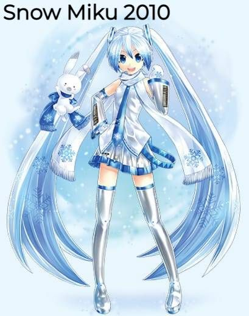
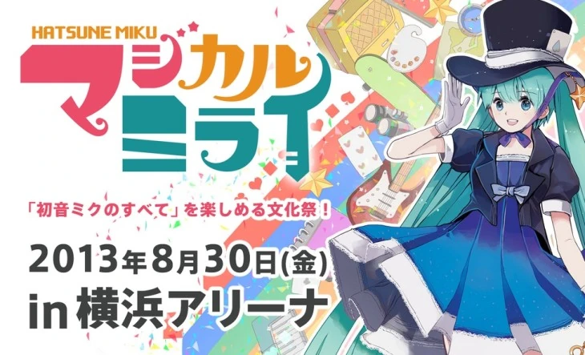
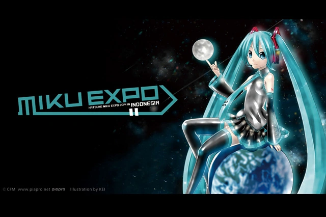
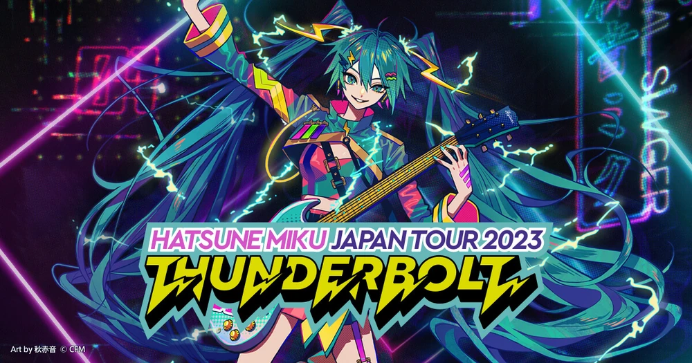
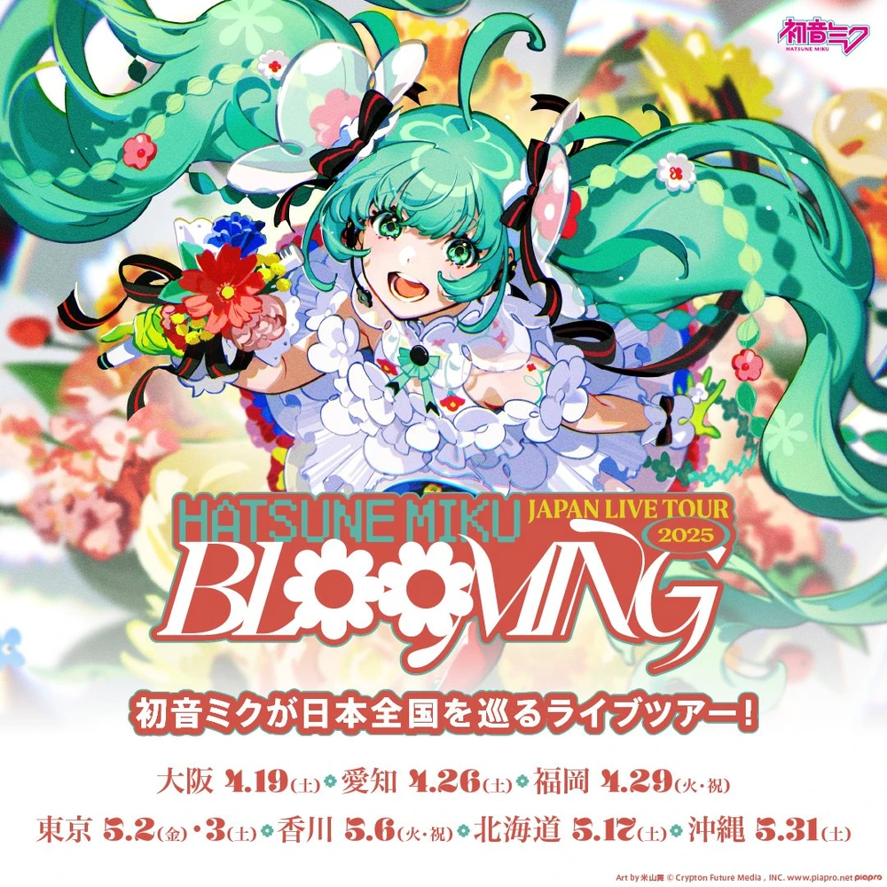
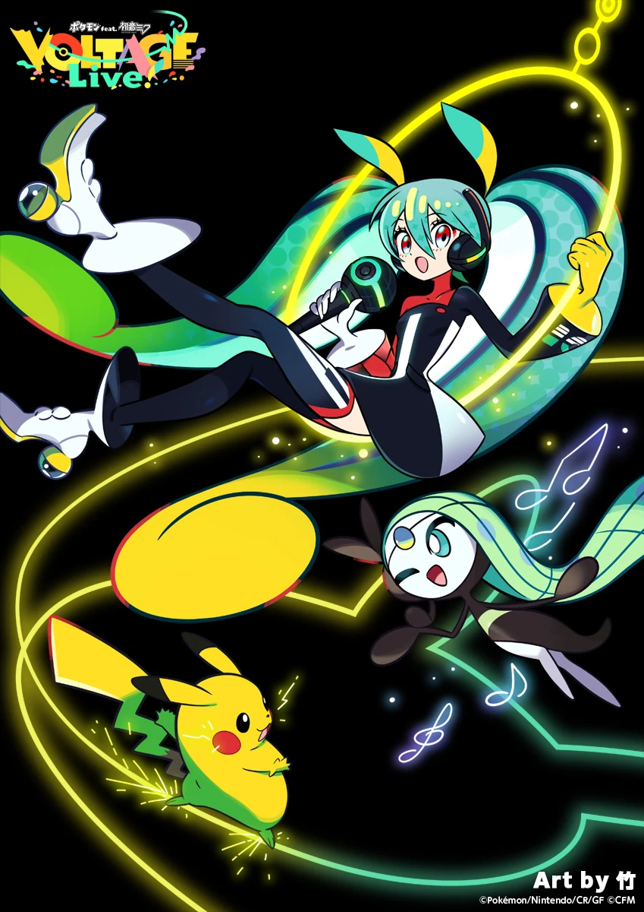

Snow Miku Festival
Born from a pure white snow sculpture at the Sapporo Snow Festival, this annual winter event has become a continuous seasonal celebration of winter music and subculture.

Magical Mirai Exhibition
Traditionally centered around Miku's birthday on August 31st, this premier annual home-stage series combines massive live performances with community creator exhibitions.

Hatsune Miku Expo
Operating globally during Magical Mirai's "off-season", this international touring matrix brings live concert experiences directly to global fanbases during the spring and fall seasons.

Miku Thunderbolt Tour
Striking venues across Japan, the thunderous live tour delivers high-voltage band performances with cutting-edge visual displays.

The Blooming Tour Stage
An elegant seasonal event celebrating growth and creative renewal, blending floral visuals with a fresh setlist arrangement.

Pokémon feat. Hatsune Miku VOLTAGE Live!
An epic official collaboration between Hatsune Miku and Pokémon, debuting 18 structural song themes and art crossovers that electrified global fanbases.